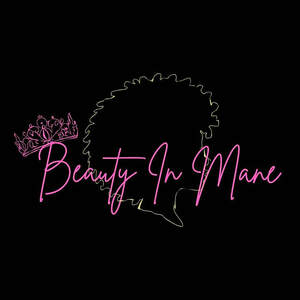

Trade Mark Journal No.2026/010 6 March 2026
UK00004340802 13 February 2026 (3)

- Class 3
- Dandruff shampoo; Hair shampoos; Emollient shampoos; Shampoos for human hair; Hair moisturising conditioners; Hair lotions; Hair moisturisers; Hair rinses; Hair conditioners; Hair styling lotions; Hair gels; Hair sprays; Hair emollients; Hair bleach; Hair pomades; Hair serums; Oils for hair conditioning; Conditioners for treating the hair; Hair mousse; Hair texturizers; Hair oils; Hair creams; Styling sprays for the hair; Hair tonics; Hair strengthening treatment lotions; Hair relaxers; Conditioners in the form of sprays for the scalp; Hair fixing oil; Hair liquids; Hair dyes; Hair nourishers; Hair styling waxes; Hair masks; Hair lighteners; Hair neutralizers; Hair lacquers; Hair care serums; Hair care lotions; Hair styling gels; Styling gels for the hair; Hair styling spray; Hair wax; Hair protection creams; Hair care masks; Hair permanent treatments; Hair glazes; Hair colouring and dyes; Hair protection lotions; Hair care creams; Moisturising creams, lotions and gels; Skin lotions; Moisture body lotion; Cosmetic creams and lotions; Skin moisturisers; Face and body lotions; Lip glosses; Lip balms; Skin emollients; Lotions for face and body care; Skin creams; Hair protection mousse; Hairspray; Styling mousse; Hair bleaching preparations; Skin conditioners; Hairstyling masks; Body moisturisers; Scalp treatments (Non-medicated -); Hair treatment preparations.
Chanel Crooks